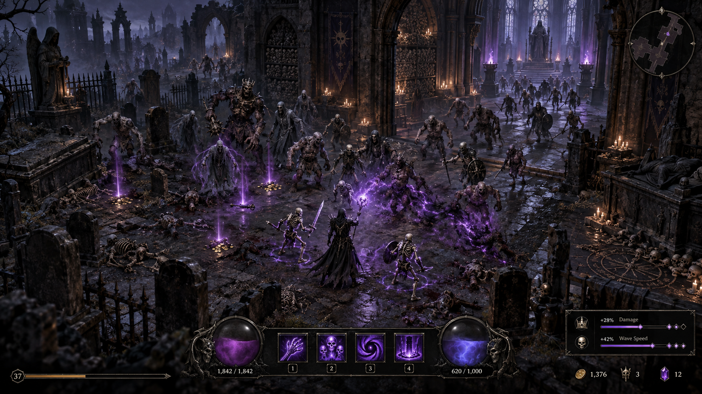
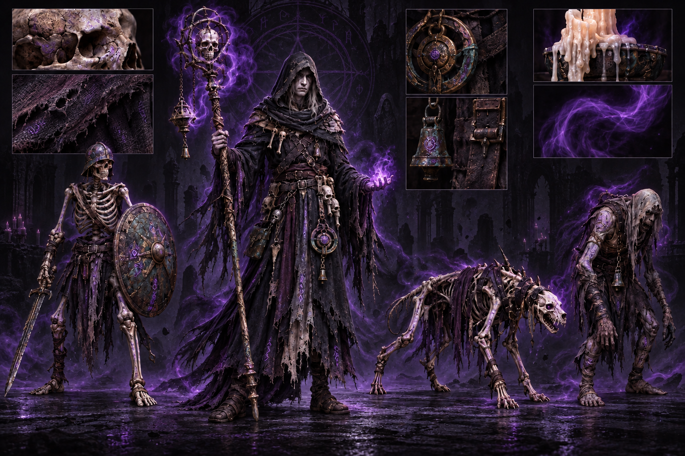

Graveyard Court
Open lanes, broken monuments, and the first restless packs clawing through the soil.
Muffin Developed
Turn the dead into momentum in a relentless dark-fantasy world of forbidden magic, escalating enemy waves, and dangerous loot.
The game
Death Muffin is an overhead action RPG set inside one connected, dying world. Roam haunted graveyards, bone-filled crypts, and ruined cathedral halls alone or with a small party. Kill what lives there. Take what it drops. Raise what remains.
There are no extraction timers or short mission resets. Keep farming, shape your build, unlock deeper rooms, and decide how much pressure you can survive.

The pressure
Every kill feeds your next decision. Equip stronger drops, increase your damage, or shorten the delay between waves. Faster waves mean denser fights, greater risk, and richer rewards.
Push the pace too far and the room overwhelms you. Keep it low and your build grows slowly. The difficulty dial belongs to the player.
The loop
Read enemy patterns, control the pack, and leave the floor covered in corpses.
Raise thralls, harvest Grave Essence, or turn bodies into violent ritual fuel.
Build around powerful drops and targeted relics from elites and area bosses.
Buy damage and wave-speed upgrades, then see whether your build can keep up.
Your covenant
Bone magic, corpse detonations, spectral wards, and temporary minions are parts of the same combat economy. Every body can become power—but never in every form at once.

The first descent
Open lanes, broken monuments, and the first restless packs clawing through the soil.
Narrow passages, dense formations, bone hounds, and corpses that refuse to stay yours.
Elite processions, shattered ritual circles, and the bell that wakes the area boss.
The gate is open